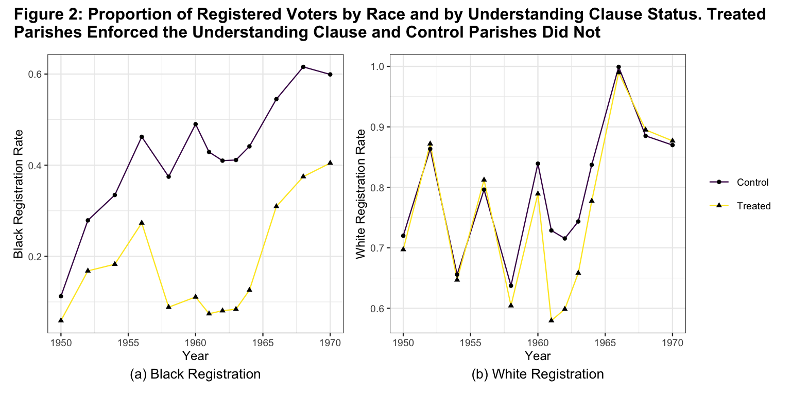
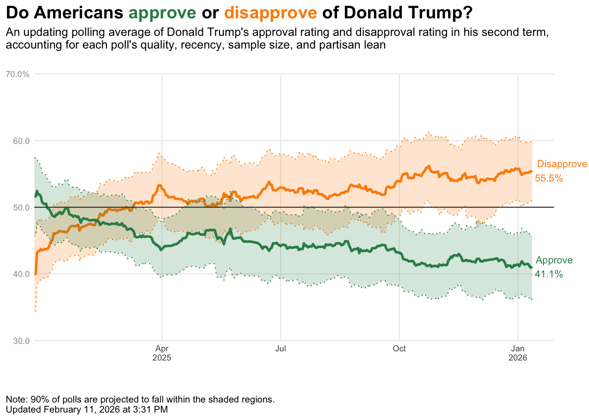
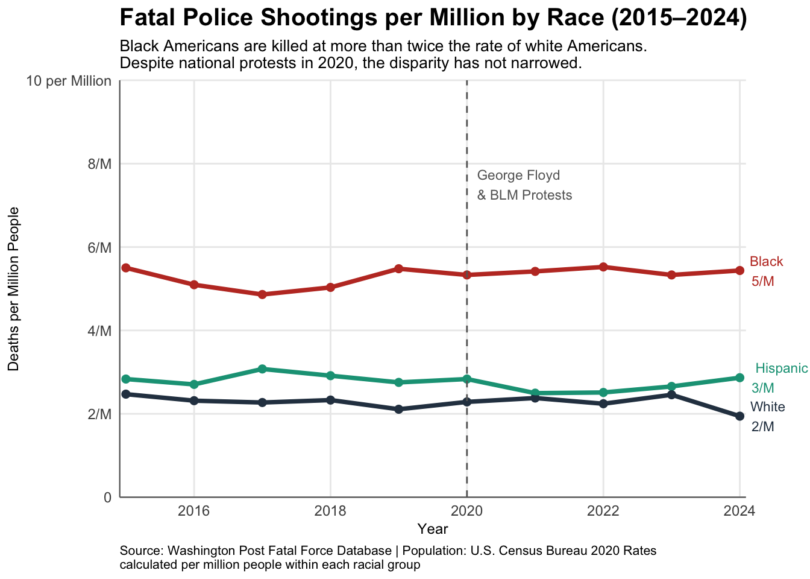

# Set up the environment and load necessary libraries
library(haven) # to read dta file
library(tidyverse)
library(patchwork)
library(ggtext)
# Read the data from the csv and dta files
slv <- read_csv('silver_bulletin.csv')
fatal <- read_csv('fatal-police-shootings-data.csv')
df <-
read_dta('la_turnout_basic.dta') |>
filter(year %in% 1950:1970) |>
mutate(
treat = if_else(understandingclause2 == 1, 'Treated', 'Control')
) |>
group_by(year, treat) |>
summarize(
breg = mean(blackregrate, na.rm = T),
wreg = mean(whiteregrate, na.rm = T)
)Fatal Police Shootings by Race (2015–2024)
Setup
Voter Registration by Race and Understanding Clause Status
# Custom theme
mytheme <-
theme_bw(base_size = 9) +
theme(
plot.caption = element_text(
hjust = 0.5,
size = 10
)
)
# Black registration trend
p1 <-
df |>
ggplot(aes(x = year, y = breg,
color = treat, shape = treat)) +
geom_line() +
geom_point(color = 'black') +
scale_color_viridis_d() +
labs(
caption = '(a) Black Registration',
x = 'Year',
y = 'Black Registration Rate',
color = NULL, shape = NULL
) +
mytheme
# White registration trend
p2 <-
df |>
ggplot(aes(x = year, y = wreg, color = treat, shape = treat)) +
geom_line() +
geom_point(color = 'black') +
scale_color_viridis_d() +
labs(
caption = '(b) White Registration',
x = 'Year',
y = 'White Registration Rate',
color = NULL, shape = NULL
) +
mytheme
# Two plots are pasted together
# Added plot_layout as 'collect' to make the plot cleaner and larger
p1 + p2 + plot_layout(guides = 'collect') +
plot_annotation(
title = 'Figure 2: Proportion of Registered Voters by Race and by Understanding Clause Status. Treated \nParishes Enforced the Understanding Clause and Control Parishes Did Not',
theme = theme(plot.title = element_text(size = 12, face = 'bold'))
)
Trump Approval vs. Disapproval Ratings (2025–2026)
# Adjust date format
slv <- slv |>
mutate(modeldate = as.Date(modeldate, format = "%m/%d/%Y"))
# Get latest date
latest <- slv |>
filter(modeldate == max(modeldate))
# Plot
slv |>
ggplot(aes(x = modeldate)) +
geom_ribbon(
aes(ymin = disapprove_lo, ymax = disapprove_hi),
color = 'darkorange',
fill = 'darkorange',
alpha = 0.2,
linetype = 'dotted'
) +
geom_line(
aes(y = disapprove),
color = 'darkorange',
linewidth = 1
) +
# approval
geom_ribbon(
aes(ymin = approve_lo, ymax = approve_hi),
color = 'seagreen',
fill = 'seagreen',
alpha = 0.2,
linetype = 'dotted'
) +
geom_line(
aes(y = approve),
color = 'seagreen',
linewidth = 1
) +
# Add labels at the end
geom_text(data = latest,
aes(x = modeldate, y = approve,
label = paste0("Approve\n", round(approve, digits = 1), "%")),
hjust = -0.1, color = "seagreen", size = 3) +
geom_text(data = latest,
aes(x = modeldate, y = disapprove,
label = paste0("Disapprove\n", round(disapprove, digits = 1), "%")),
hjust = -0.1, color = "darkorange", size = 3) +
geom_hline(yintercept = 50, color = 'gray25') +
coord_cartesian(clip = "off") +
theme_minimal(base_size = 9) +
theme(
panel.grid.minor = element_blank(),
plot.title.position = 'plot',
plot.title = element_markdown(size = 15, face = 'bold'),
plot.subtitle = element_text(size = 10, margin = margin(b = 20, unit = 'pt')),
plot.caption = element_text(size = 8, hjust = 0, margin = margin(t = 20, unit = 'pt')),
plot.caption.position = 'plot',
axis.title = element_blank(),
axis.text.y = element_text(color = 'gray60'),
axis.text.x = element_text(color = 'gray30'),
plot.margin = margin(t = 5, r = 30, b = 5, l = 5)
) +
scale_x_date(
limits = as.Date(c('2025-01-21', '2026-02-28')),
breaks = as.Date(c('2025-04-30', '2025-07-31', '2025-10-31', '2026-01-31')),
labels = c('Apr\n2025', 'Jul', 'Oct', 'Jan\n2026'),
expand = expansion(mult = 0)
) +
scale_y_continuous(
limits = c(30, 70),
breaks = seq(30, 70, 10),
labels = c('30.0', '40.0', '50.0', '60.0', '70.0%'),
expand = expansion(mult = 0)
) +
labs(
title = "Do Americans <span style='color: seagreen;'>approve</span> or <span style='color: darkorange;'>disapprove</span> of Donald Trump?",
subtitle = "An updating polling average of Donald Trump's approval rating and disapproval rating in his second term,\naccounting for each poll's quality, recency, sample size, and partisan lean",
caption = "\nNote: 90% of polls are projected to fall within the shaded regions.\nUpdated February 11, 2026 at 3:31 PM"
)
Fatal Police Shootings by Race (2015–2024)
fatal <- fatal |>
mutate(
year = year(as.Date(date)),
race = case_when(
race == "B" ~ "Black",
race == "W" ~ "White",
race == "H" ~ "Hispanic",
TRUE ~ NA_character_
)
) |>
filter(!is.na(race), year >= 2015, year <= 2024)
# U.S. Census Bureau 2020 estimates (in millions)
# Source: census.gov/library/stories/2021/08/improved-race-ethnicity-measures...
# Used as fixed denominators across 2015–2024 to normalize shooting rates
pop <- tibble(
race = c("Black", "White", "Hispanic"),
population_millions = c(46.9, 204.3, 62.1)
)
# Normalize by population to enable fair cross-race comparison.
# Without this, white Americans would dominate counts due to population size.
rate_fatal <- fatal |>
group_by(year, race) |>
summarize(count = n(), .groups = "drop") |>
left_join(pop, by = "race") |>
mutate(rate_per_million = count / population_millions)
race_colors <- c(
"Black" = "#C0392B",
"Hispanic" = "#16A085",
"White" = "#2C3E50"
)
ggplot(rate_fatal, aes(x = year, y = rate_per_million, color = race)) +
geom_point(size = 2) +
geom_line(linewidth = 1.3) +
# George Floyd - line at 2020 and text
geom_vline(xintercept = 2020, linetype = "dashed", color = "gray40", linewidth = 0.5) +
annotate("text", x = 2020.15, y = 7.5, label = "George Floyd\n& BLM Protests",
hjust = 0, size = 3, color = "gray40") +
# End-of-line labels
geom_text(
data = filter(rate_fatal, year == 2024),
aes(label = paste0(race, "\n ", round(rate_per_million, 0), "/M")),
hjust = -0.3, size = 3, show.legend = FALSE
) +
coord_cartesian(clip = "off") +
# Scales
scale_x_continuous(
breaks = seq(2016, 2024, 2),
expand = expansion(mult = 0.01)
) +
scale_y_continuous(
limits = c(0, 10),
breaks = seq(0, 10, 2),
labels = c('0', '2/M', '4/M', '6/M', '8/M', '10 per Million'),
expand = expansion(mult = 0)
) +
scale_color_manual(values = race_colors, name = 'Race') +
# Labels (to get fit in the screen, the code identation was removed)
labs(
title = "Fatal Police Shootings per Million by Race (2015–2024)",
subtitle = "Black Americans are killed at more than twice the rate of white Americans.\nDespite national protests in 2020, the disparity has not narrowed.",
caption = "Source: Washington Post Fatal Force Database | Population: U.S. Census Bureau 2020 Rates\ncalculated per million people within each racial group",
x = 'Year',
y = 'Deaths per Million People'
) +
theme_minimal() +
theme(
plot.title = element_text(size = 15, face = "bold"),
plot.subtitle = element_text(size = 10),
plot.caption = element_text(size = 8, hjust = 0),
axis.text = element_text(size = 9),
axis.title.x = element_text(size = 9),
axis.title.y = element_text(size = 9),
legend.position = "none",
panel.grid.minor = element_blank(),
axis.line = element_line(color = "grey40", linewidth = 0.4),
plot.margin = margin(t = 5, r = 40, b = 5, l = 5)
)
Every year, hundreds of people are killed by police in the United States – but the risk is not shared equally. For a decade, the Washington Post has recorded every fatal police shooting in the country, producing one of the most complete datasets on this issue. The federal government still does not track these deaths consistently. Therefore, the current likely represents a floor, not a ceiling – real numbers are probably higher.
This analysis asks one question: are Black, White, and Hispanic Americans killed at the same rate, and has that pattern changed over time?
Raw count of deaths is misleading because White Americans are the largest share of the population. To compare fairly, I calculate deaths per million people within each racial group, using U.S. Census 2020 estimates as a fixed denominator. This approach allows the analysis to focus on relative risk rather than absolute counts, which would otherwise overrepresent larger population groups. While using a single-year population benchmark may introduce minor distortions in year-to-year trend interpretation, the 2020 Census provides the most reliable and recent demographic reference point.
The results are clear and consistent. Every year from 2015 to 2024, Black Americans are killed at more than twice the rate of White Americans. Hispanic Americans fall between the two groups. This holds in every single year across the full decade, the gap does not shrink, and it does not widen. It simply persists.
In 2020, the murder of George Floyd and the Black Lives Matter protests that followed put police violence at the center of public debate like never before. Many cities pledged reforms. New policies were introduced. Yet the data shows no inflection point. The rate of fatal police shootings in the years after 2020 looks almost identical to the years before it.
What the data tells us is that this is not a story about isolated incidents or local failures. It is a structural pattern, which is consistent across ten years, across different administrations, and through one of the most significant social movements in modern American history. That the numbers have not moved is, itself, the story.
Limitations: This analysis covers only Black, White, and Hispanic Americans; other racial groups are excluded due to inconsistent coding in earlier years of the database. The Washington Post database is the most comprehensive public source available, but because federal reporting of police-caused deaths is not mandated, the dataset undercounts actual fatalities. Population denominators are fixed at 2020 Census estimates and do not adjust year-by-year.
Source:
Washington Post. Fatal Force Database. https://github.com/washingtonpost/data-police-shootings
U.S. Census Bureau. (2021, August 12). https://www.census.gov/library/stories/2021/08/improved-race-ethnicity-measures-reveal-united-states-population-much-more-multiracial.html
AI Disclaimer:
I used Google searches to find R code examples and Census data sources, but some R code snippets were automatically generated by Google’s AI search features and I used some of those.
- How to use geom_ribbon
- To store colors in variable (e.g, race_colors)
- To join tibble, intercept (x,y), annotate